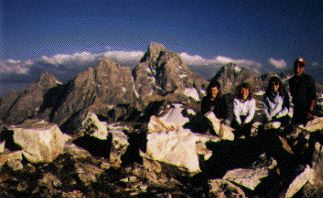
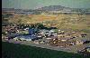

The Department of Recreation Education offers degrees designed
to address the requirements of those who intend to go to a
university. Career options for those who complete a four year
degree in this field include choices in the areas of Outdoor
Recreation, Therapeutic Recreation, Municipal Administration,
Youth Agencies and Commercial Recreation.
In addition, the Department offers an elective program of
instruction in outdoor leadership. Special emphasis is placed on
the experimental teaching and leadership of one's own family in
the outdoors. The department is a strong resource to the general
student body and community.
Current
Catalog Department Description
Special Outdoor Facilities
Special Programs
Meet the Faculty
Contacting the Department
Return to the Ricks
College Home Page
Contacting Us:
Recreation Education Department
Manwaring Center, Room 150
Ricks College
Rexburg, Idaho 83460-0730
Phone: (208) 356-2225
E-mail: reced@ricks.edu
Facilities
The Ricks College Outdoor Learning Center at Badger Creek
 The Outdoor Learning Center is owned and operated by
Ricks College. Located on the north end of the beautiful Teton
Valley, the ranch spreads across 200 acres of rolling hills and
valleys. The Teton Mountains and Targhee National Forest are
present in panoramic view. Facilities include a campground, 10
small cabins, lodge, resident director's cabin and a logistics
center. A high adventure ropes course with seventeen elements,
horseback riding center, cross country ski trails, rope tow for
sledding and skiing and a canoeing pond are available for
programmed activities.
The Outdoor Learning Center is owned and operated by
Ricks College. Located on the north end of the beautiful Teton
Valley, the ranch spreads across 200 acres of rolling hills and
valleys. The Teton Mountains and Targhee National Forest are
present in panoramic view. Facilities include a campground, 10
small cabins, lodge, resident director's cabin and a logistics
center. A high adventure ropes course with seventeen elements,
horseback riding center, cross country ski trails, rope tow for
sledding and skiing and a canoeing pond are available for
programmed activities.
Facilities are available for rental between September and May
when not in use for academic programs. Cabins sleep 6, with
propane light and heat. Restroom facilities for the cabins
consist of two outhouses. No running water, kitchen or shower
facilities are available for cabin occupants. The lodge sleeps 20
with kitchen, bathroom and shower facilities. Bedding and
utensils must be provided by individual groups. For more
information or to schedule the facility, contact the Recreation Education Dept.
Return to the top of the page
The Ricks College Livestock Center

An indoor arena and riding facilities for class use are located
five miles to the west of the Ricks College campus.
Return to the top of the page
Faculty
Kari Smith
Department Head, Ph.D. candidate in Recreation Resources at
Utah State University. Master of Agriculture Degree in Recreation
and Resources Development at Texas A&MUniversity 1979.
Bachelor of Science Degree in Recreation Education at Brigham
Young University 1976. Eleven years as faculty member at Ricks
College. Teaches courses in Backpacking, Rock Climbing, Camping
skills, Cross country skiing, Environmental Interpretation,
Experiential Education, and Recreation and Leisure in Modern
Society. Wildness Education Association Instructor, Professional
Ski Instructors of America certified instructor.
Nicholas Baldwin
Director of Outdoor Horse Program. Masters degree from Brigham
Young University. Fifteen years as faculty member at Ricks
College. Instructor for the LDS Church Education System previous
to Ricks College. Teaches courses in Basic and Intermediate
equitation, Timed Events and Trail Riding. Champion calf roper.
Jerald L. Jex
Director of Outdoor Learning Center. Bachelor degree in Health
Science, Brigham Young University, 1970 and Master degree of
Recreation Education, Brigham Young University, 1977. Ten years
as faculty member to Ricks College. Taught for sixteen years in
the LDS Church Education System previous to Ricks College. Served
with the U.S. Coast Guard. Teaches courses in White water
aquatics, Backpacking, Canoeing, Survival, Experiential
Education, and Introduction to Special Population.
Scott F. Wood
Director of Summit Expeditions. Bachelor degree in Special
Education, from University of Utah, 1976. Master's degree in
Outdoor Recreation from University of Utah, 1995. Master's degree
in Educational Psychology, 1982, from Brigham Young University.
Eight years as faculty member at Ricks College. Instructor for
the LDS Church Education System for twelve years previous to
Ricks College. Teaches courses in Telemark skiing, Cross country
skiing, Winter camping, Mountaineering, Rock climbing, Mountain
biking, Canoeing, Outdoor Leadership, and Careers in Recreation.
Certified Professional Ski Instructor and Backcountry Mountain
Guide.
Return to the top of the page
Special
Programs
Family and Youth Programs:
Scheduled programs include: Family Reunions, Youth
Conferences, Outdoor Especially for Youth and special workshops
for grandparents and grandchildren. Programs can also be
scheduled for special group gatherings. Program activities
include: canoeing, horseback riding, ropes course, black powder
rifles, outdoor survival workshops, crafts, handcart treks, and
initiative course. For information on scheduling and cost, call
Continuing Education, (208) 356-1040 or Continuing Education,
ASB, Ricks College, Rexburg, ID 83460-8011.
Summits:
The Department of Recreation Education offers extended
expedition experiences.
Spring Summit:
Three to four week trip to the Canyonlands area of southern
Utah. Students spend a week mountain biking, a week of
backpacking, and a week of canoeing and white water rafting on
the Green and Colorado Rivers. Participants travel through
geological wonders and visit ancient Native American sites.
Students need to be in excellent physical condition to
participate. Courses offered include: Mountain biking,
Backpacking, Outdoor leadership, Camp Skills, Personal Heath and
First Aid.
Winter Summit:
A two part trip held during Christmas break in the Tetons. The
first trip is four day long before Christmas. The second part is
six days long between New Year's Day and the beginning of Winter
Semester. Students travel on back country skis, carry packs and
pull gear sleds. Shelters include snow caves and tents. Students
need to be in excellent physical condition and provide their on
warm, functional winter outdoor clothing. Courses offered
include: Winter Camping, Backcountry sking and Outdoor
leadership.
Return to the top of the page
Ricks College Homepage
President's Message | General Information | Academics | Admissions
Alumni and Development | College Services | Continuing Education
News, Events and Sports | Student Life
©Ricks College 1997
Updated: 16 October, 1996 BPR